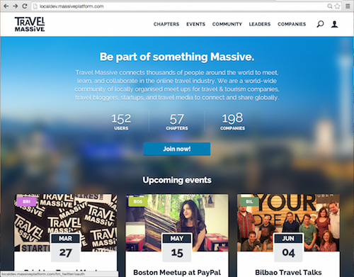

Massive Platform
Travel Massive's Global Community Platform
View the Project on GitHub travelmassive/massiveplatform
Platform Sponsors

Email us at platform@travelmassive.com if you would like to become a sponsor.
Welcome to Massive Platform.
Welcome to Massive Platform, Travel Massive's open-source community and event platform.

What Is Massive Platform?
Travel Massive is a world-wide community in more than 60 cities, connecting thousands of travel insiders at locally organised events to empower change in the travel industry and make travel better. You learn more on our public manifesto.We developed Massive Platform to help our members connect more easily and to provide a centralized place for profiles and events. We outgrew all the usual tools such as Facebook pages and Meetup, and we wanted our own community platform, so we built one. We've made our platform open-source so that other communities can benefit from and build on our efforts and help make this product awesome.
Right now, this is beta (probably alpha) software that is nearing production release, but we'd love to have more contributors. If you are an interested developer, follow the instructions below to get started.
Key Features
Membership Features
- User Registration
- User Profile Pages
- Sign In With Twitter
- Users Vanity URLs
(ie: travelmassive.com/myname) - Invite Members By Email
- Follow Members
- Approved Users Badge
- Chapter Leaders
Chapter Features
- Chapter Profile Pages
- List Chapter Leaders
- List Chapter Members
- List Upcoming Events
- Members Can Join Chapters
- Contact Chapter Leaders
- Map Of Chapters (Openlayers)
- Export Membership Data (CSV)
Event Features
- Event Profile Page
- Chapters Can Create Events
- Attendee Registration
- External RSVP Supported
(ie: eventbrite, meetup) - Waitlist / Seat Limit
- Manage Waitlist/RSVPs
- Email to Attendees/Waitlist
- Restrict to Approved Members
- Partner Events (No Chapter)
- Customize Event URLs
- List All Upcoming Events
- Event Reminders (TODO)
- Export Attendee Data (CSV)
Company Features
- Company Profile Pages
- Multiple Profile Managers
- List Companies
- Filter Companies By Country
- Filter Companies By Segment
- Follow Companies
- Company Vanity URLs
(ie: travelmassive.com/company) - Set As Sponsor
Other Features
- Responsive HTML5 Design
- Mobile / Tablet / Desktop
- Search Content
- Google Universal Analytics (TODO)
Drupal Features
- Drupal D7
- Code Driven Features
- Data Migration With CSV
- Display Suite Design
Planned Features
Our Core focus is on developing features to support the needs of the Travel Massive community and our partners. Below is a list of some of the features we plan on working on next.
Little Things
- API Feeds (RESTful)
- Tweet Events
- Import Wordpress Content
- Sign In With LinkedIn
- Sign In With Facebook
Big Things
- Post Content
(ie: presentation, talks) - Partner Sections
- Got an idea? Build it!
How To Install Massive Platform
Installing the platform is reasonably straight forward if you you've got some Drupal experience. Here's a list of things you'll need:
- A Web Server (nginx preferred)
- A MySQL Database
- PHP 5.5+
- A long train ride
If you are developing with Ubuntu (our preference) you can get up and running easily by installing the following packages:
sudo apt-get update
sudo apt-get install mysql-server php5-mysql
sudo apt-get install nginx
sudo apt-get install php5-fpm
sudo apt-get install drush
Once you've got nginx, MySQL and PHP, then you're ready to go. These examples were developed for our Ubuntu Linux development environment so you may need to modify to suit your own set-up.
1. Get the source code
$ cd /var/www
$ git clone https://github.com/travelmassive/massiveplatform.git \
massiveplatform
Cloning into 'massiveplatform'...
remote: Counting objects: 133588, done.
remote: Compressing objects: 100% (1023/1023), done.
remote: Total 133588 (delta 162), reused 0 (delta 0)
Receiving objects: 100% (133588/133588), 125.97 MiB | 1.08 MiB/s, done.
Resolving deltas: 100% (94854/94854), done.
Checking connectivity... done.
Checking out files: 100% (6926/6926), done.
2. Create database and permissions
ubuntu@localhost$ mysql
mysql> create database massiveplatform;
Query OK, 1 row affected (0.01 sec)
mysql> grant all on massiveplatform.* to massiveplatform@localhost
identified by 'massiveplatform';
Query OK, 0 rows affected (0.03 sec)
3. Create an nginx configuration file
We've created a sample configuration file in the 'massiveplatform_setup_files' folder to get started.cd /var/www/massiveplatform
sudo cp massiveplatform_setup_files/localdev.massiveplatform.com.conf /etc/nginx/site-enabled
!/etc/init.d/nginx restart
4. Edit your php.info
Change the following variables in your php.ini as set out below (On Ubuntu: /etc/php5/fpm/php.ini)# Required by nginx php usage
cgi.fix_pathinfo = 0
# Support users uploading large profile pictures from smart phones
post_max_size = 8M
service php5-fpm restart
5. Import Sample MySQL database
cd /var/www/massiveplatform
zcat massiveplatform_setup_files/massiveplatform.sql.gz | mysql -u massiveplatform -p massiveplatform
6. Copy settings.php and non-git files into sites/default
cd /var/www/massiveplatform
mkdir sites/default
cp massiveplatform_setup_files/settings.php sites/default
# note - edit settings.php here if you changed database name or password
tar zxvf massiveplatform_setup_files/sites.tar.gz
7. Fix permissions - allow web server write access to default/files
sudo chown -R :www-data /var/www/massiveplatform
sudo chmod -R 775 /var/www/massiveplatform/sites/default/files
sudo chmod 444 /var/www/massiveplatform/sites/default/settings.php
8. Enable the redirect module
cd /var/www/massiveplatform
drush dl redirect
drush en redirect
9. Ready!
Ok, now point your browser to your web server. In our example configuration, we set it to "localdev.massiveplatform.com". If you are developing on your local server you can probably use "localhost", or if you have configured hosts files you can use "localdev.massiveplatform.com"
If you have succesfully installed Massive Platform, your web browser should look something like this:

10. Default Logins
Here are the default logins for the site (in "username / password" format):- Demo account: "demo / demo"
- Admin account: "admin / testing"
- Sample users: "username / massive" (example: ian / massive)
Get this far? Let Us Know!
If you get this far and got your local development site running, we'd love to know! Send an email to ian@travelmassive.com and also provide any tips on improving these installation instructions so we can add it for others. Thanks!
Development Tips
Handy drush commands
- drush cc all (clear the cache)
- drush fd (view features list)
- drush mi --all --rollback --force (rollback and reload all sample data)
Other tips and tricks
- To enable Twitter, edit sites/default/settings.php and include your Twitter OAuth Settings
- When saving .csv for migration imports, ensure the file has Linux/PHP friendly line breaks and is UTF8 format
- To edit SASS stylesheets you'll need compass installed (apt-get install compass), then run "compass watch sites/all/themes/tm" to update css files
What's open-source and what is copyright?
- The code is released under the Drupal License (GPL).
- The Travel Massive name and logo is trademarked and can not be re-distributed in subsequent works.
- Sample data such as company and profile images may also be subject to copyright by their owners.
Authors and Contributors
- Flipside - initial project design, HTML theme and alpha implementation
- Ian C - information architecture, bug fixes, lots of stuff
- Robyn Stanley (@rumpledelf) - bug fixing, event management
- Ryan Cross (@rcross) - final stage project management
Support or Contact
Having trouble? Check out the our project wiki (in development) or issue tracker. You can also contact us at platform@travelmassive.com and we’ll help you sort it out.